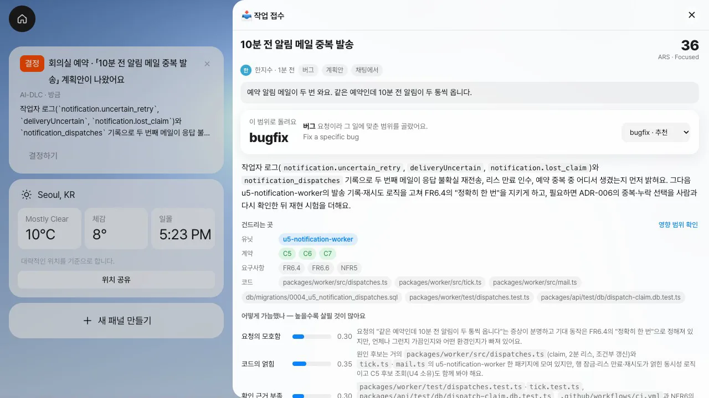
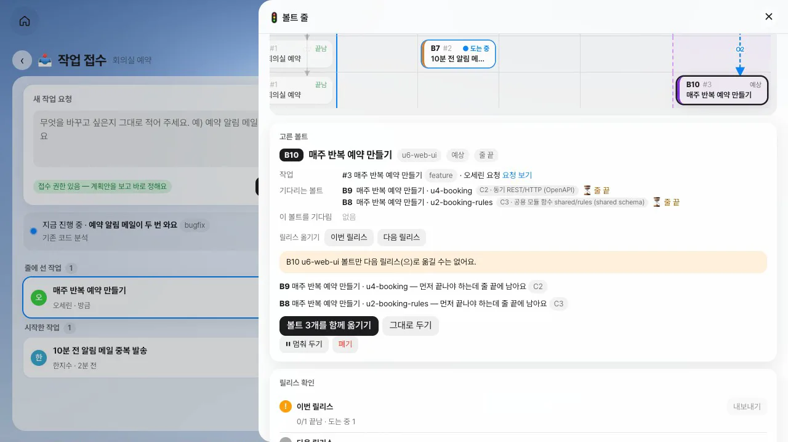
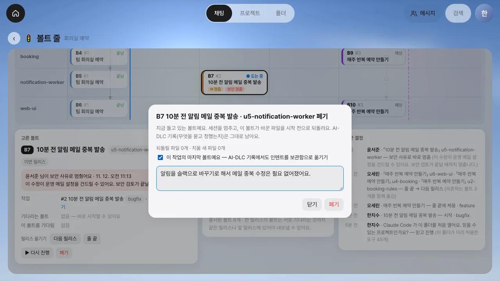

레벨 2까지는 의도 하나를 처음부터 끝까지 만들었습니다. 제품을 내보낸 뒤에는 버그와 기능 요청이 계속 들어옵니다. 이 장에서는 새 요청을 어떤 범위로 돌릴지 가늠하는 방법, 여러 의도의 볼트를 릴리스 순서대로 세우는 방법, 그리고 부딪히는 요청과 버려야 하는 볼트를 다루는 방법을 살펴봅니다.
출시 뒤에는 무엇이 달라지나#
classic을 한 번 끝내면 저장소에는 유닛과 계약, 요구사항, 결정 기록이 남습니다. 그 뒤의 요청은 빈 저장소가 아니라 이미 있는 유닛 위에 놓입니다(브라운필드). 그래서 요청마다 정할 것이 생깁니다.
| 정할 것 | 왜 어려운가 | 이 장의 도구 |
|---|---|---|
| 어느 범위로 돌릴까 | 버그 하나에 classic은 단계가 너무 많고, 큰 기능에 bugfix는 설계를 건너뜁니다 | 계획안: 추천 범위와 점수 |
| 어느 유닛을 건드리나 | 요청을 적는 사람은 유닛 이름을 모릅니다 | 계획안: 기록에 있는 유닛·계약·요구사항만 싣기 |
| 언제 시작하나 | 세션은 하나인데 요청은 여럿입니다 | 줄 끝에 세우기, 다음 작업 시작 |
| 어느 릴리스에 나가나 | 유닛끼리 계약으로 연결되어 있어 따로 나갈 수 없는 볼트가 있습니다 | 볼트 줄: 릴리스 칸과 의존 |
| 지금 만드는 것과 부딪히면 | 만들고 난 뒤에야 알게 됩니다 | 계획안의 충돌 카드, 멈춤과 폐기 |
범위를 가늠하기: ARS#
AI-DLC 2.11.2에는 요청의 불확실성을 점수로 가늠하는 규칙이 들어 있습니다(aidlc-composer-agent). 다섯 항목에 0~1의 점수를 매기고, 엔진이 하나의 점수 ARS(Autonomy Risk Score, 0~100)로 합칩니다.
| 점수 | 묻는 것 |
|---|---|
| 요청의 모호함 | 무엇을, 어디까지, 무엇이 되면 끝인지가 요청에 분명한가 |
| 코드의 얽힘 | 고칠 곳이 한 유닛에 모여 있나, 여러 유닛과 계약에 걸치나 |
| 확인 근거 부족 | 고친 것이 맞는지 확인해 줄 시험과 기록이 이미 있나 |
| 틀렸을 때 위험 | 잘못 고치면 돈·보안·데이터에 닿나, 되돌릴 수 있나 |
| 숨은 가정 | 묻지 않으면 시스템이 말없이 정해 버릴 결정이 있나 |
점수가 낮으면 단계가 적은 흐름에, 높으면 단계가 많은 흐름에 가깝습니다(21~40은 Focused, 41~60은 Standard). 다만 같은 점수라도 어느 항목이 높은지에 따라 필요한 단계가 다르므로 점수는 참고 기준입니다. Process GPT Lite의 작업 접수는 요청을 받으면 팀 세션과 따로 Claude Code를 한 번 돌려 이 점수를 매기고, 요청의 종류(버그·기능 …)와 엔진이 계산한 가까운 범위를 함께 살핍니다. 이를 바탕으로 범위와 건드릴 유닛을 계획안으로 내놓습니다.
- 대화에
작업 접수: 예약 알림 메일이 두 번 와요. 같은 예약인데 10분 전 알림이 두 통씩 옵니다.라고 적습니다. 폴더의 작업 접수 앱에서 적어도 됩니다. - 1분 안팎이 지나면 계획안이 옵니다. 범위
bugfix(추천), ARS 36 · Focused, 유닛u5-notification-worker, 계약 C5·C6·C7, 요구사항 FR6.4·FR6.6·NFR5, 그리고 코드 후보 파일입니다. - 점수마다 무엇을 보고 매겼는지 한 줄씩 읽습니다. 맞지 않으면 범위를 바꾸거나 영향 범위 확인에서 유닛을 고칩니다.
- 지금 시작을 고르면 팀 세션에
/aidlc bugfix "…"가 들어갑니다. 엔진이 의도를 만들면(bugfix · 6단계 · Brownfield) 볼트 줄에 볼트가 「도는 중」으로 섭니다.

같은 저장소에 「매주 반복 예약」을 요청하면 범위는 feature, ARS 46 · Standard, 유닛은 셋이 나옵니다. 요청 셋을 가늠하는 데 53 · 64 · 86초, 한 번에 0.8~0.9달러쯤 들었습니다. 계획안은 추천이고, 시작 단추는 접수 권한이 있는 사람(팀 리드, PO)이 누릅니다.
볼트 줄: 여러 의도의 볼트를 릴리스 순서로#
21장의 볼트 보드는 의도 하나를 유닛과 볼트로 펼쳤습니다. 볼트 줄은 의도 여럿을 한 줄에 놓습니다. 가로는 릴리스(출시됨 · 이번 릴리스 · 다음 릴리스 · 줄 끝), 세로는 유닛입니다.

도는 작업이 있을 때 접수한 요청은 줄 끝에 섭니다. 유닛마다 예상 볼트 하나씩입니다. 반복 예약은 B8(u2-booking-rules), B9(u4-booking), B10(u6-web-ui) 셋이 됐습니다.
볼트끼리는 유닛의 계약으로 연결됩니다. 화면(u6)은 예약 API(u4)의 계약 C2를, 예약 API는 예약 규칙(u2)의 계약 C3을 받아 씁니다. 계약을 주는 쪽이 먼저 끝나야 하므로 B10은 B9를, B9는 B8을 기다립니다. 그래서 B10만 다음 릴리스로 옮기려 하면 막히고, 함께 가야 할 볼트를 알려 줍니다.


릴리스를 내보낼 때도 같은 규칙을 따릅니다. 한 릴리스의 볼트는 기다리는 볼트까지 같은 릴리스나 앞 릴리스에 있어야 내보낼 수 있습니다.
부딪히는 요청, 멈춤, 폐기#
새 요청이 줄에 있는 볼트와 맞지 않을 수 있습니다. 메일 중복을 고치는 볼트가 도는 중에 「알림을 메일 대신 슬랙으로, 메일 발송은 없앱니다」가 들어온 경우입니다. 계획안은 그 볼트를 이름으로 가리키고, 요청의 말과 볼트의 말을 나란히 놓고 까닭을 적습니다.

무엇을 살릴지는 사람이 정합니다. 이때 쓰는 것이 멈춤과 폐기입니다.
| 걸음 | 누가 | 무엇이 일어나나 |
|---|---|---|
| 멈춤 요청 | 폴더 구성원 누구나 | 까닭과 함께 팀 리드·PO에게 알립니다 |
| 보안 멈춤 | 폴더 구성원 누구나 | 「보안 문제예요」에 표시하면 권한을 묻지 않고 세션을 바로 멈춥니다. 볼트는 멈춰 둔 상태가 됩니다 |
| 다시 진행 · 폐기 | 팀 리드, PO | 까닭을 보고 이어 가거나 버립니다. 폐기에는 까닭이 필요합니다 |
| 폐기 뒤 | — | 그 볼트가 바꾼 파일은 시작 전으로 되돌리고, AI-DLC 기록은 남깁니다. 마지막 볼트면 의도를 보관함으로 옮깁니다(aidlc engine intent archive) |


코드를 되돌리면서 기록을 남기는 이유는 감사 기록의 목적과 같습니다. 무엇을 묻고 무엇을 정했는지, 그리고 왜 버렸는지가 다음 사람이 읽을 사양의 일부이기 때문입니다. 폐기하면 줄 앞이 비고 「다음 작업 시작」이 뜹니다. 다음 작업은 스스로 시작하지 않습니다. 사람이 시작 단추를 누릅니다.
실습에서 확인한 것과 못 한 것#
- 이 장의 화면은 「팀 회의실 예약」(classic으로 끝낸 유닛 6개 저장소)에 요청 셋을 실제로 넣어 얻었습니다. 버그 수정은 코드를 고치기 전에 폐기해서 되돌린 파일이 0개였습니다.
- 충돌 판단은 모델이 합니다. 이 실습에서는 「함께 갈 수 있음」으로 나왔고, 놓치거나 잘못 짚을 수 있습니다.
- 한 번에 도는 세션은 하나입니다. 유닛마다 작업 트리를 나눠 여러 볼트를 동시에 만드는 것은 아직 해 보지 않았습니다.
- 화면을 하나씩 따라 하려면 Process GPT Lite 튜토리얼 32장 「AI-DLC 작업 접수와 볼트 줄」을 보세요.
확인 문제#
「예약 알림 메일이 두 번 와요」는 bugfix, 「매주 반복 예약」은 feature로 추천됐습니다. 무엇이 달랐나요?
요청의 종류(버그와 기능), 건드리는 유닛 수(하나와 셋), 그리고 다섯 점수입니다. 반복 예약은 기록에 답이 정해져 있지 않은 항목(종료 조건, 겹칠 때 처리 같은 숨은 가정)이 많아 ARS가 더 높았습니다(36과 46). 추천이 맞지 않으면 사람이 범위를 바꿉니다.
화면 유닛의 볼트만 다음 릴리스로 옮길 수 없는 까닭은 무엇인가요?
화면은 예약 API의 계약을, 예약 API는 예약 규칙의 계약을 받아 씁니다. 계약을 주는 볼트가 줄 끝에 남으면 화면 볼트가 먼저 나갈 수 없습니다. 기다리는 볼트까지 함께 옮겨야 합니다.
볼트를 폐기할 때 코드는 되돌리면서 AI-DLC 기록은 남기는 까닭은 무엇인가요?
코드는 다음 작업이 깨끗한 상태에서 시작하도록 되돌립니다. 기록은 무엇을 묻고 정했는지, 왜 버렸는지를 다음 사람이 읽을 수 있도록 남깁니다. 같은 요청이 다시 들어왔을 때 처음부터 다시 따지지 않기 위해서입니다.